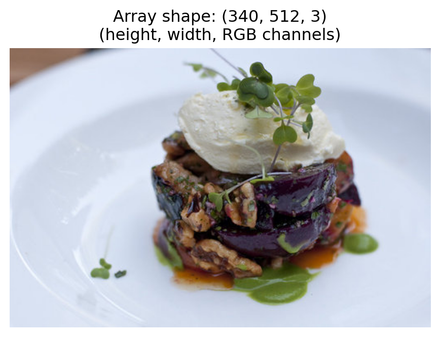
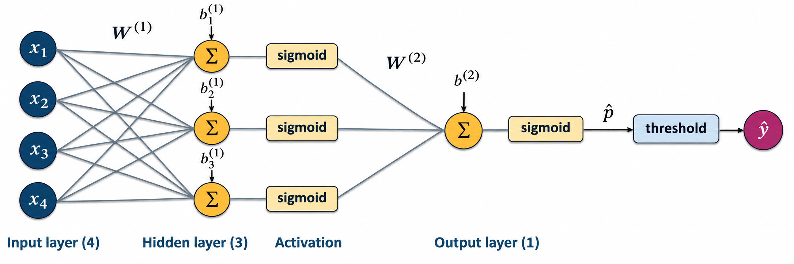
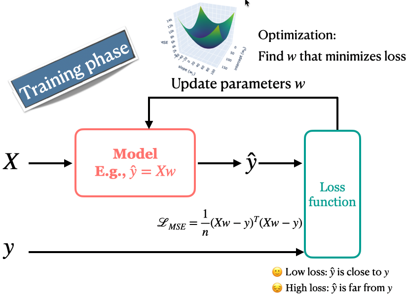
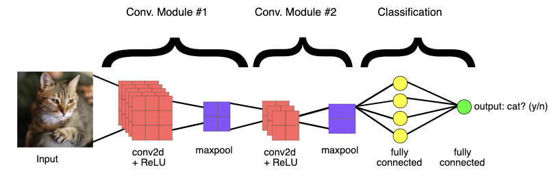

Lecture 17: Introduction to computer vision
Announcements
Clicker: shopping recommendations for Eva
A shop uses content-based filtering with backpack attributes: Waterproof, Laptop compartment, and Recycled material. Eva has rated 12 backpacks.
How should the shop predict Eva’s rating for a new backpack?
- (A) Fit Ridge using the 12 backpacks’ attributes and Eva’s ratings, then pass the new backpack’s attributes to that model.
- (B) Fit Ridge using other shoppers’ ratings as features and Eva’s ratings as targets.
- (C) Fit Ridge using backpack attributes and all shoppers’ ratings together, without identifying the shoppers.
- (D) Recommend only backpacks Eva has already rated because a new backpack has no rating.
Today’s big questions
- How do neural networks learn useful features?
- Why do CNNs use local, shared filters for images?
- How can a pretrained model help us classify new labels?
- How do we evaluate the resulting classifier?
One label, many appearances

Which differences matter for the label cat?
Image classification with our current toolbox
What model would you try for image classification?
What features would you give it?
Think about logistic regression, KNN, or random forests.
CNNs for image classification
A convolutional neural network (CNN) is a neural network architecture designed to work with images.
- We will build high-level intuition for how CNNs work.
- We can use pretrained CNNs for our own tasks without studying every architectural or training detail.
Let’s begin with a brief introduction to neural networks.
A graphical view of logistic regression

- Weights and an intercept produce a score.
- Sigmoid converts the score into a binary class probability.
- A threshold converts that probability into a label.
A neural network with one hidden layer

Each hidden unit computes its own weighted sum and bias, then applies a nonlinear activation. Its output becomes a feature for the next layer.
How many parameters do we learn?
With 4 inputs, 3 hidden units, and 1 output unit:
- How many weights do we learn?
- How many biases do we learn?
Computing the first hidden feature
\[ \begin{aligned} z_1^{(1)} &= w_{11}^{(1)}x_1 + w_{12}^{(1)}x_2 + w_{13}^{(1)}x_3 + w_{14}^{(1)}x_4 + b_1^{(1)} \\ h_1 &= \operatorname{sigmoid}\!\left(z_1^{(1)}\right) \end{aligned} \]
- Superscript \((1)\) identifies the first layer, not a power.
- \(w_{12}^{(1)}\) connects input 2 to hidden unit 1.
- Repeat with different weights and biases to obtain \(h_2\) and \(h_3\).
Computing the output
\[ \begin{aligned} z^{(2)} &= w_1^{(2)}h_1 + w_2^{(2)}h_2 + w_3^{(2)}h_3 + b^{(2)} \\ \hat p &= \operatorname{sigmoid}\!\left(z^{(2)}\right) \end{aligned} \]
- Layer \((2)\) combines the three hidden features using its own weights and bias.
- \(\hat p\) is the predicted probability of the positive class.
- Computing the hidden features and prediction is a forward pass.
Why nonlinear activations?
Stacking weighted sums without nonlinear activations still gives a linear model.
- Nonlinear hidden activations allow nonlinear decision boundaries.
- ReLU is another activation: \(\operatorname{ReLU}(z)=\max(0,z)\).
- Multiple hidden layers repeatedly transform the representation.
This is the idea behind deep learning.
How does a network learn?

A loss measures disagreement with known targets. Training adjusts weights to reduce that loss.
We’ll use a pretrained model with fixed weights to extract image features, then train a familiar model, such as logistic regression, on those features.
Introduction to computer vision
Computer vision tasks

Today we focus on image classification: one category for an entire image.
Images as numerical arrays
- Grayscale: height × width intensity values.
- RGB: height × width × 3 colour channels.
- A 340 × 512 RGB image has 522,240 values.
Why use local image structure?
Flattening preserves pixel values, but an ordinary classifier does not automatically use the fact that nearby pixels form patterns.
- Moving an object can change many input values.
- Connecting every pixel to every hidden unit creates many parameters.
- A CNN uses local filters and shares their weights across locations.
Convolutions and shared filters

A filter computes a weighted sum over a local patch. Reusing it across locations produces a feature map.
Convolutional neural networks

Convolutions and activations build features. Pooling reduces spatial dimensions. A classification head maps features to scores.
Pretrained CNNs
Why start with a pretrained model?
Training a CNN from scratch can require substantial labelled data, computing power, and time.
Companies and research groups have already trained models on large image datasets.
A pretrained model gives us a starting point: an architecture with weights already learned from data.
Three ways to use a pretrained model
- Use it directly: predict its original categories with its weights fixed.
- Extract features: keep the pretrained weights fixed and train a new classifier, such as logistic regression, on its features.
- Fine-tune it: update some or all pretrained weights using our task’s training data.
We’ll focus on direct prediction and frozen feature extraction.
ImageNet classification
- We use MobileNet V3 Small, trained for 1,000 ImageNet categories.
- Its original classifier chooses among those categories.
- It cannot invent a new output label.
Multiclass classification: each example receives one of several labels. Multilabel classification allows several labels per example.
Imagenet classes
Downloading: "https://download.pytorch.org/models/mobilenet_v3_small-047dcff4.pth" to /Users/firasm/.cache/torch/hub/checkpoints/mobilenet_v3_small-047dcff4.pth['paper towel',
'parachute',
'parallel bars',
'park bench',
'parking meter',
'passenger car',
'patio',
'pay-phone',
'pedestal',
'pencil box',
'pencil sharpener',
'perfume',
'Petri dish',
'photocopier',
'pick']Multinomial logistic regression
- Binary: one score, converted into the positive-class probability using sigmoid.
- Multinomial: one score per class, each computed using that class’s own coefficients and intercept.
- Softmax converts those scores into class probabilities that sum to one.
Predict the class with the highest probability.
A CNN’s classification head applies the same score-to-probability idea to learned image features.
Softmax probabilities
Suppose a classifier produces these scores for four classes:
| Class | Score | Probability | |
|---|---|---|---|
| 0 | 0 | 1.2 | 0.248 |
| 1 | 1 | -0.4 | 0.050 |
| 2 | 2 | 2.0 | 0.552 |
| 3 | 3 | 0.7 | 0.150 |
Class 2 wins: it has the highest score and probability.
Softmax preserves the score ordering. A high probability does not guarantee a correct prediction.
Softmax
For scores \(z_1,\ldots,z_K\),
\[P(y=k)=\frac{e^{z_k}}{\sum_{j=1}^{K}e^{z_j}}.\]
Exponentiation makes values positive. Dividing by their sum makes probabilities add to one.
Every probability depends on all class scores.
Using pretrained models out of the box
- We reuse an image classifier trained elsewhere to predict labels for new photos.
- The model learned from labeled images during its original training; we do not train it here.
When the labels do not answer our question
Suppose our task is to identify UBC landmarks.
The model predicts an ImageNet category with high confidence.
- Does confidence establish that the landmark is correct?
- Can the model predict a landmark absent from its output vocabulary?
- How could we adapt it to our own labels?
Frozen feature extraction
Use the pretrained CNN to produce a representation for each image.
- Apply the preprocessing expected by the pretrained weights.
- Remove the original classification head.
- Keep the CNN weights fixed.
- Train a scaler and logistic regression for our food labels.
Our seven labels can differ from ImageNet’s labels.
Food classification: live demo
Image preprocessing versus feature scaling
| Operation | What it does | Where its settings come from |
|---|---|---|
| Image preprocessing | Resize, crop, normalize RGB input | Pretrained weight specification |
| Feature extraction | Produce 576 learned features | Frozen ImageNet weights |
| Feature scaling | Learn feature means and scales | Current training rows |
| Logistic regression | Learn food class coefficients | Training features and labels |
Keep scaling inside the scikit-learn pipeline.
The classifier always chooses a known food category, even for an unrelated image. One prediction does not measure accuracy.
What learns from our labels?
We extract frozen ImageNet features from 300 plant photographs and train a classifier for five species.
- Which components learned from ImageNet? Which learn from the plants?
- Must the species appear in ImageNet’s original labels?
- If we change only
C, must we run the CNN again? - What if we change the image preprocessing?
Connection to HW7
| Food demo | HW7 |
|---|---|
| Seven food categories | Six waste categories |
| Fixed training/validation folders | Training data with stratified CV, reserved test set |
| Dummy versus pretrained features | Also compare low-resolution pixel features |
| One logistic regression setting | Choose C using GridSearchCV |
| Validation mistakes | Final test metrics and application limits |
Both use frozen MobileNet features and a scaler inside the pipeline.
The Golden Rule still applies
- Fit scaling and logistic regression using only the current fitting rows.
- Use validation data or CV to choose settings.
- Evaluate the selected workflow once on the reserved test set.
- Keep related images, such as frames from the same video, together when splitting.
Extracting deterministic frozen features does not fit to held-out images. Using their results to choose settings does.
Practical limitations
- Domain shift: features from everyday photos may transfer poorly to other image conditions.
- Pretrained models inherit gaps and biases from their source data.
- Larger extractors cost more time and memory.
- Fine-tuning updates CNN weights on the new data. It is outside our scope and may overfit a small dataset.
Evaluate on images representative of the intended use.
Summary
- Neural networks combine weighted sums and nonlinear activations to learn features.
- CNNs use local filters shared across image locations.
- Pretrained predictions use the original label vocabulary.
- Frozen feature extraction supports new labels with a familiar classifier.
- Compare baselines, inspect errors, and protect the data splits.